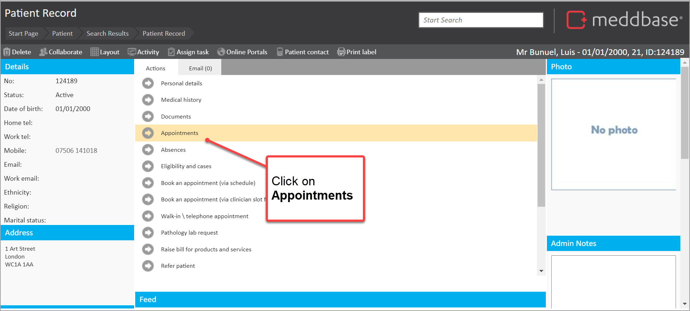
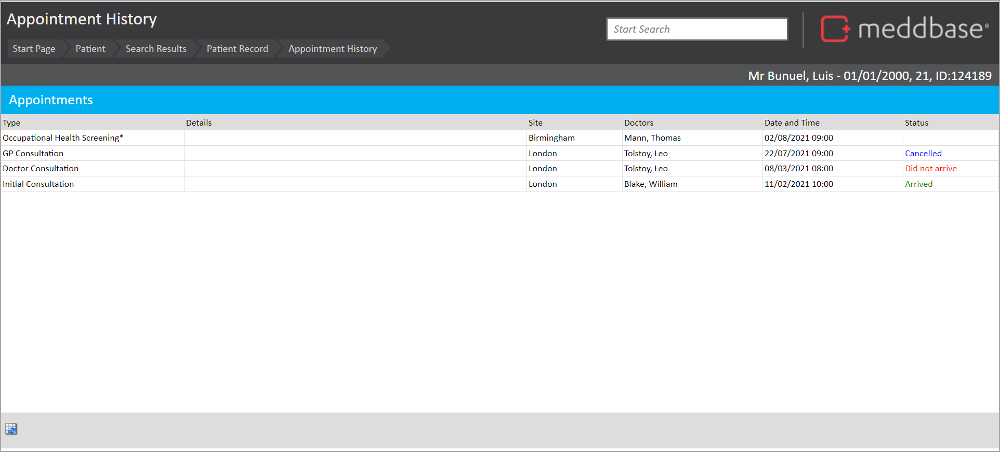

This article explains what you can see and do on the 'Appointments' page and how to get there.
You can find the appointments page from the Patient Record, as follows:
1. From the Start Page, select the Patient tile
2. Select Find Patient
3. In the Search screen
Upon clicking onto the patient, you will be on the Patient Record. From here:
4. Click Appointments in the Actions panel

You are taken to the Patient Appointment page.
Once you're on the Appointments Page, you are able to view all appointments that have been booked for the patient, past, present and future.

From here for each appointment you can view:
From here you can also: